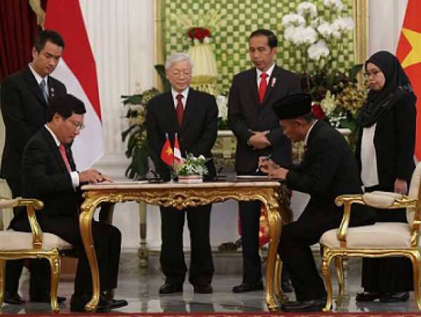

KERJASAMA INTERNASIONAL: INDONESIA X VIETNAM
📚✏️Bidang Pendidikan & Kebudayaan🎏🎎
- Indonesia dan Vietnam telah menjalin hubungan yang erat di bidang pendidikan melalui berbagai program kerja sama yang bermanfaat bagi generasi muda kedua negara. Salah satu bentuk kerja sama tersebut adalah program pertukaran pelajar. Dalam program ini, pelajar dari Indonesia dapat belajar di Vietnam untuk memahami sistem pendidikan, bahasa, dan budaya setempat, begitu pula sebaliknya. Selain itu, kedua negara juga memberikan beasiswa kepada pelajar berprestasi. Beasiswa ini membuka peluang bagi siswa untuk melanjutkan pendidikan di universitas terbaik di masing-masing negara, seperti Universitas Indonesia dan Universitas Nasional Vietnam.
- Di bidang kebudayaan, Indonesia dan Vietnam sering mengadakan festival budaya bersama. Festival ini menampilkan seni tradisional dari kedua negara, seperti tari tradisional, musik khas, dan pameran kerajinan tangan. Acara ini tidak hanya memperkenalkan kebudayaan masing-masing negara kepada masyarakat luas, tetapi juga mempererat hubungan persahabatan. Salah satu contohnya adalah pertunjukan wayang kulit Indonesia yang dipadukan dengan seni boneka air khas Vietnam, yang menjadi simbol harmoni budaya kedua bangsa.
- Kerja sama ini memberikan dampak positif yang besar, terutama dalam membangun rasa saling menghormati dan menghargai perbedaan. Melalui pendidikan dan kebudayaan, generasi muda Indonesia dan Vietnam dapat belajar untuk hidup berdampingan dengan semangat persatuan. Dengan adanya program-program seperti ini, diharapkan hubungan kedua negara semakin erat dan dapat memberikan manfaat yang lebih luas di masa depan.
